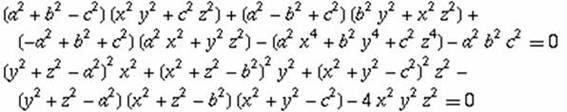

Problema 327
Dado un triangulo ABC, sea un punto P en su plano y sean x=AP, y=BP, z=CP.
Demostrar que:

http://mathworld.wolfram.com/TripolarCoordinates.html (Euler 1786).
Solución de José Carlos Chávez Sandoval, estudiante peruano de Matemática Pura en la Universidad Nacional Mayor de San Marcos
Dado un triangulo ABC, un punto P en su interior.
Sean AP=x, BP=y, CP=z.
Sean k=medida de <APC y l=medida de <CPB.
Por el teorema de cosenos tenemos:
c^2=x^2+y^2-2xycosk
I.
a^2=y^2+z^2-2yzcosl
II.
b^2=x^2+z^2-2xzcos(k+l) III.
Por la formula del ángulo compuesto tenemos que cos(k+l)=cosk cosl-senk senl
Reemplazando en III. senksenl=coskcosl+(b^2-x^2-z^2)/2xz
y elevando al cuadrado se sigue que
cos^2kcos^2l + (b^2-x^2-z^2)^2/4x^2z^2 + coskcosl(b^2-x^2-z^2)/2xz= sen^2(k).sen^2(l)=(1-cos^2(k))(1-cos^2(l))
y reemplazando I. y II. se siguen los resultados.